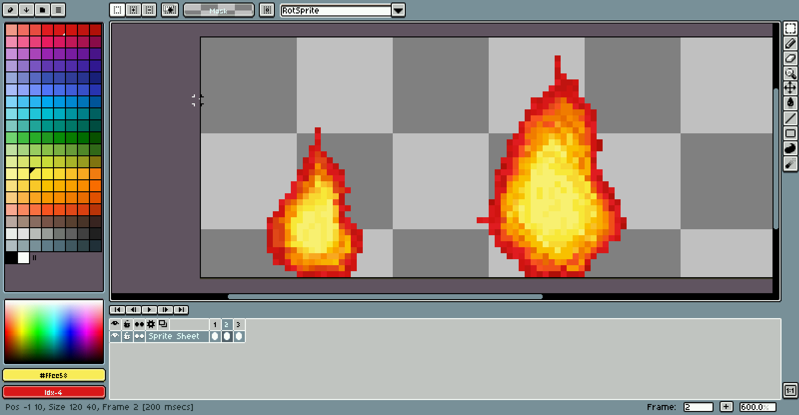
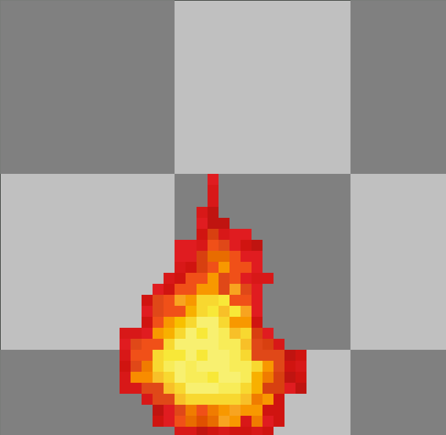
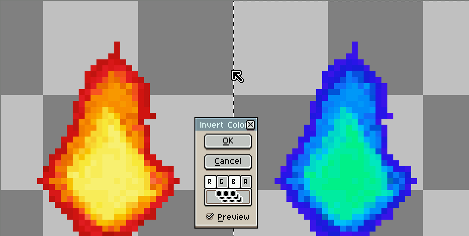

Moving Fire on the Go! - ABRACADABRA
Pixel Art

Some time after I created that unpleasant fire, I make up my mind to create a better fire (pixel art) that move (partly inspired by an dancing banana image). I plan to use aseprite.
Drawing
Draw two image (32x32px each, skip to the Fixing to read more about what I did wrongly) side-by-side to set an alternative image.
Animate
Use tab to open the timeline and press Alt + n to create a new frame. Try
to rotate some part and modify it to make it looks like it is moving.

Enlarge
To enlarge the image, I use imagemagick. Note interesting fork that is fast,
graphicsmagick where everything is prefixed with gm.
convert input.gif -scale 125% output.gif
Note: as a side effect, the fire seems to shake. Nice one @Max-P
Fixing
Later on, I figured out not to manually enlarge it but to enlarge the canvas size by 8px (40px now) and redraw everything.

Inverts
After drawing it, I plan to create another image that have blue flame instead of red flame by extending the canvas size by another 40px horizontally.
- Use
Rectangular Marquee Toolor pressmand select the red flame. Ctrl + clickand paste the image next to it.- In
Edit -> Invert, ignore green component and apply to all cell in the sprite.

Outputs

Integrate
Add <a id=fire href="/"> to index.html. Modify style.css:
#fire {
display: inline-block;
width: 40px; height: 40px;
background: url(/img/fire.gif);
}
#fire:hover { background-position:-40px 0; }
#fire:active { background-position:-80px 0; }
This move the background to another position when it is during hover or active.
Optimize
The biggest loser of file size is done by hand, I choose to least colors needed to color the fire (tough choice), normalizing the colors. At last, I reduce the color palette from ~30 to 7 with the file size reduced by at least by 40% IIRC.
Rather than separating two different color on a separate position. We can make
use of filter property in CSS to do color invert to reduce file size by ~20%.
Later, I then remove the separate blue block from each frame and have use this:
#fire {
display: inline-block;
margin: 0 5px 5px 0;
width: 40px; height: 40px;
text-indent: -9em;
background-image: url(/pub/fire.gif);
}
#fire:hover { background-position:-40px 0; }
#fire:active { filter: hue-rotate(90deg); }
In addition, use gifsicle and try out option -O and k to shrink it more.